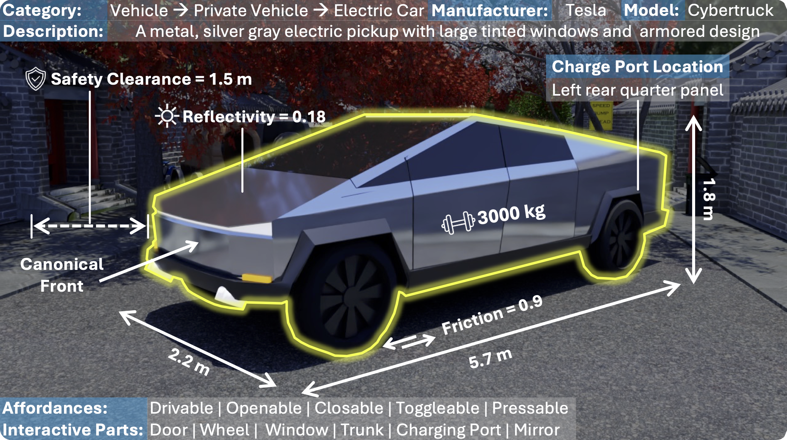

UrbanVerse-100K Asset Database
Object Assets Walkthrough.
Example of Per-object Annotation.

Examples of Road PBRs.

Examples of Sidewalk PBRs.

Examples of Sky HDRIs.

Interactive Statistics of Object Category Distributions in UrbanVerse-100K.
Interactive Features: Click on any segment to drill down into subcategories. Use the center to navigate back up the hierarchy. Better View in Full Screen